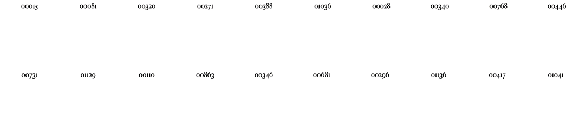
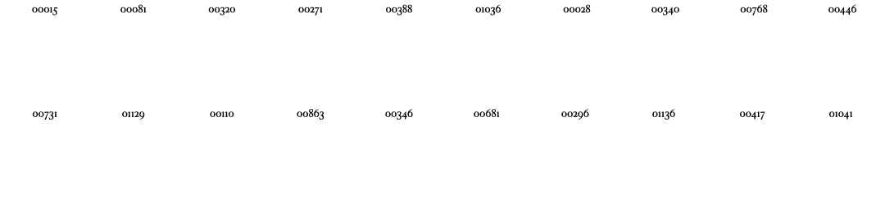

Tech Routes / Sim2Real
From IndustReal to RebarSim: where sim-to-real contact-rich assembly stands
In 2023, IndustReal showed that training RL in simulation and transferring zero-shot to a real robot for millimeter-scale insertion works. But its policy took state input, depended on pose estimation, and used no system identification. Over the next three years the RL algorithm itself barely changed. Progress came from four pieces of engineering: SDF contact simulation, motor/joint system identification, reset distributions that cover every task stage, and teacher→RGB-student distillation with appearance randomization. With all four in place, policies act directly from RGB and start to generalize across geometry: RebarSim reaches 91.3% on real factory rebar. The assumption that the object is already in the gripper has not been broken yet.
The shift in one picture
The most visible difference between the two generations is the data flow at deployment. In 2023, a CAD-dependent pose estimator sits between the camera and the policy. In 2026 that layer is gone and the policy reads pixels. The cost moves to training: you need a teacher that sees everything in simulation, then distill it into a student that sees only images.
Put the five works on one map: the x-axis is how much external information deployment depends on, the y-axis is task complexity. The top-right corner, “RGB + grasp-to-insert + multi-step”, is still empty.
Real-robot demos
Videos play muted when they scroll into view. Start with the successes and watch three things: what the input is (poses or pixels), what the parts are (precise prints or real parts with tolerances), and what happens after a collision (jam, regrasp, or back out and retry).
Successes
All zero-shot, no real-robot training data1.4 mm clearance, with rebar angle and twist pushed to the tolerance limits. Watch for the moments where it hits a slot, backs out and realigns: nothing in the reward asks for that, RL discovered it.
Real 137/150 · 91.3%Picks the peg up from anywhere on the table, then inserts it. High success, but only 22% on the first try: most successes go through a regrasp or reinsertion.
Real 85.4% · first try 22.0% · 1.49/minGrasp, align with the threaded hole, screw in: a multi-step contact task.
Real 56.4% · first try 43.6% · 0.63/minNeeds flipping and precise alignment; the table has a fixture and a mat. The hardest of the four tasks.
Real 15.4% · first try 5.8% · 0.31/min

The same assemblies side by side in sim and real. Parts are precise 3D prints, poses come from FoundationPose, and the plug is placed in the gripper beforehand. Contrast with RebarSim, whose parts are themselves imprecise and which does no pose estimation.
Real specialist 86.5% · generalist 84.5%IndustReal (2023) has no publicly embeddable video; see its project page for demos.
Failures
Where the sim-to-real gap showsThe paper notes that contact strategies that rotate the part against the hole, and strategies that set the part down to regrasp, both transfer poorly to the real robot.
Watch alongside the success highlights above.
Flipping is sensitive to residual control error.
RebarSim reports the same kind of main failure mode: after hitting a slot, the policy keeps rotating the rebar instead of backing out, grip friction cannot transmit enough torque, and in-hand roll builds up until recovery is impossible. The authors attribute it to the gap between simulated and real contact. The shared failure point across these works is in-hand slip, which the SysID described below does not yet cover.
Paper by paper
2023 IndustReal: it works, carried by arm compliance State input
Franka Panda, task-space impedance control, wrist-mounted D435. Parts follow NIST Task Board 1: round and square pegs (8/12/16 mm, clearance 0.5–0.6 mm), three gears, NEMA 1-15P / 5-15P plugs. 83–99% over 600 real-robot trials.
- The policy takes pure state input. Vision is only used for Mask R-CNN detection and calibration; insertion goals are recorded by hand-guiding the arm into place.
- No rendered images and no system identification. Much of the insertion success comes from the arm's own compliance under impedance control, which guides the part into the hole.
- Main failures: the object slipping in the gripper, and plugs jamming.
2024 AutoMate: geometric generalization, still needs CAD and pose State + geometry features
Also Franka + D435. 100 two-part assemblies (3D printed, clearance 0.5–1.0 mm). One specialist is trained per assembly, then 20 specialists are distilled into a generalist that takes PointNet geometry features. On the real robot across 20 assemblies: specialist 86.5%, generalist 84.5%; with perception-based initialization on 5 assemblies, 86–90%.
Needs a CAD model and a 6D pose estimate for every part; two-part assemblies only; in single tests the plug is placed in the gripper by hand; failures are mostly unstable grasps on irregular geometry.
2026 OmniReset: hand the difficulty to resets, the gap to SysID RGB
UR7e + Robotiq 2F-85, three RealSense cameras, torque-level OSC at 500 Hz, policy at 10 Hz; Isaac Lab with SDF contact. Each of its two core ideas fits in one diagram.
The start states for the “partly inserted” column above: each episode begins from a different half-inserted pose.
At any moment the environments are at different stages of the task. This is what reset diversity looks like.
- The RGB student reaches only about 50% success even in sim (teacher about 90–95%): distillation loss is the largest gap.
- Low first-try success; many successes rely on repeated regrasps and reinsertions; 60 ms inference latency causes jitter; the drawer task needs a fixture and a mat.
- Still lab-scale peg-in-hole tasks; generalization across object geometry is not evaluated.
- Compute: 8–24 h from scratch on 4×L40S; distillation takes about 2 days on one H200.
2026 RebarSim: taking the recipe to real industrial parts 8-view RGB
Inserting rebar into slots, a step in rebar-cage assembly on construction sites. Compared with lab peg-in-hole, the difficulty is that the parts are imprecise at two levels: different members have different nominal designs, and each bar carries its own fabrication error.
Multi-view input for the same task under varied lighting, textures and camera perturbations. RebarSim randomizes the same way, with the views switched to 8 slot close-ups plus a global view.
| Eval set | Sim | Real |
|---|---|---|
| 9 training designs | 96.1% | — |
| 4 unseen in-grid designs | 96.6% | — |
| 4 out-of-grid designs (extrapolation) | 77.6% | — |
| Design D1 (ℓ=350, w=195 mm) | 95.4% | 90.7% (68/75) |
| Design D2 (ℓ=290, w=290 mm) | 96.8% | 92.0% (69/75) |
- Still assumes the rebar is already grasped; only the insertion phase is shown.
- Views are fixed crops for the target slot group; switching slot groups needs a mobile base or active vision.
- Gravity compensation for the rebar is done manually.
Four engineering levers
A common question: is today's sim-to-real progress mainly about more accurate SysID, or about better simulators? Parallel RL training (Isaac Gym/Lab, GPU MuJoCo) stopped being the bottleneck by 2022. The big simulator step was Factory in 2022; the three years since have been four engineering levers stacking up.
Capability boundaries: what can and cannot be demoed today
- Single-step insertion with the object already in hand and a target that is fixed or locatable from images: pegs, gears, connectors, rebar into slots.
- Tolerances of 0.5–1.4 mm; parts from a parametric family or with geometric variation within tolerance.
- Autonomous back-out and retry after collisions; moderate background and lighting changes (RebarSim still gets 25/30 with a changed background).
- Multi-stage tasks that need regrasping or flipping: OmniReset table-leg screwing 56%, drawer assembly 15%.
- Throughput: OmniReset Peg manages 1.5 successes per minute, far from production cycle times.
- End-to-end vision policies that combine grasping and insertion.
- Multi-part assembly sequences (AutoMate explicitly handles two-part assemblies only).
- Deformable assembly: cables, hoses.
- Very tight-tolerance assembly that needs force or tactile feedback; current work deliberately avoids F/T sensors.
- Deployment from arbitrary viewpoints or on a mobile base.
Outlook for industrial assembly
- Doable. Given “already grasped upstream, fixed station, parametric part family”, sim-to-real for industrial insertion is ready for product demos. RebarSim shows it still holds on real factory parts with real fabrication error, and a new design needs only light sim fine-tuning (4–6× fewer distillation samples).
- The moat is engineering, not algorithms. PPO plus teacher-student is now a public recipe. Differentiation comes from the SysID pipeline, procedural part generators, reset-bank generation and rendering-randomization coverage. All of it has to be redone for each station, and it is what accumulates best into a toolchain.
- The biggest pitfall is grasping and in-hand pose. Every method sidesteps it, and the failure videos from every group end in in-hand slip. Worth betting on: joint grasp-and-insert training, and more accurate grip-friction modeling or tactile sensing.
- The “we saw similar demos years ago” objection is fair. IndustReal did NIST-style insertion in 2023. The difference is that input went from poses to raw RGB, and parts went from precise CAD parts to real parts with error. That doesn't show in a demo video, but deployment cost is very different.
References
- Y. Narang et al., Factory: Fast Contact for Robotic Assembly, RSS 2022.
- B. Tang et al., IndustReal: Transferring Contact-Rich Assembly Tasks from Simulation to Reality, RSS 2023. arXiv:2305.17110
- B. Tang et al., AutoMate: Specialist and Generalist Assembly Policies over Diverse Geometries, RSS 2024. arXiv:2407.08028 · project
- P. Yin et al., Emergent Dexterity via Diverse Resets and Large-Scale Reinforcement Learning (OmniReset), 2026. arXiv:2603.15789 · project
- Anonymous, Visual Sim-to-Real Learning for Robotic Insertion under Geometric Variations: Application to Rebar Installation (RebarSim), under review. project
- T. Sun et al., Mobile Robotic Rebar Cage Assembly via Imitation Learning, Automation in Construction, 2026.
- Bjelonic et al., PACE (actuator system identification), 2025.
Videos and GIFs are copyright of the respective paper authors, taken from their project pages, and used here only for comparison.
技术路线 / Sim2Real
从 IndustReal 到 RebarSim：Sim2Real 接触式装配这条路走到哪了
2023 年 IndustReal 证明了“仿真里训 RL、零样本上真机做 mm 级插装”可行，但它是状态输入、依赖位姿估计、不做系统辨识的。三年里 RL 算法本身变化不大，变化来自四项工程工作：SDF 接触仿真、电机/关节系统辨识、覆盖全任务阶段的 reset 分布、带外观随机化的 teacher→RGB student 蒸馏。四项凑齐后，策略可以直接从 RGB 出动作，并开始跨几何变化泛化：RebarSim 在工厂真实钢筋上做到 91.3%。“物体已在手中”这个前提至今没被打破。
一张图看变化
两代系统最直观的差别在部署时的数据流：2023 年的方案在相机和策略之间夹着一个依赖 CAD 的位姿估计器；2026 年的方案把这一层去掉，策略直接读像素。代价被挪到了训练侧：需要一个在仿真里看得见一切的 teacher，再把它蒸馏给只看图像的 student。
把五篇工作放到同一张地图上：横轴是部署时要依赖多少外部信息，纵轴是任务复杂度。右上角，即“RGB + 从抓取到插入 + 多步”，目前还是空白。
真机 Demo 对比
视频进入视野时自动静音播放。先看成功案例，注意三件事：输入是什么（位姿还是像素），零件是什么（精确打印件还是带误差的真实件），撞到之后怎么办（卡死、重抓，还是退出重插）。
成功演示
同为零样本、无真机训练数据间隙 1.4 mm，钢筋角度和扭转都顶到公差上限。留意撞槽后退出、重新对准的片段：奖励里没有这一项，是 RL 自己学出来的。
真机 137/150 · 91.3%从桌面任意位置抓起再插入。成功率高，但首次成功只有 22%：多数成功要经过重抓或重插。
真机 85.4% · 首次 22.0% · 1.49 次/分钟抓起、对准螺孔、旋拧，多步接触任务。
真机 56.4% · 首次 43.6% · 0.63 次/分钟需要翻转和精确对位，桌面加了治具和垫子。四个任务里最难的一项。
真机 15.4% · 首次 5.8% · 0.31 次/分钟同一套装配体的 sim 与 real 并排。零件是精确 3D 打印件，位姿由 FoundationPose 估计，插头事先放在夹爪里。和 RebarSim 对比：后者的零件本身就不精确，也不做位姿估计。
真机 specialist 86.5% · generalist 84.5%IndustReal（2023）没有公开可嵌入的视频，演示见其 项目页。
失败案例
sim2real gap 暴露在哪论文指出：贴着孔转动零件的接触策略、以及放下再重抓的策略，真机迁移都比较差。
和上面的成功精选对照着看。
翻转对残余控制误差很敏感。
RebarSim 报告的主要失败模式是同一类问题：撞槽后策略没有退出，而是继续旋转钢筋，夹持摩擦传不出足够力矩，手内滚转越积越大直到无法恢复。作者归因于仿真和真实接触的差异。几家共同的失败点都落在“手内滑动”上，这是下一节 SysID 还没覆盖到的部分。
逐篇拆解
2023 IndustReal：证明了可行，靠的是手臂柔顺 状态输入
Franka Panda，任务空间阻抗控制，腕部 D435。任务来自 NIST Task Board 1 风格的零件：圆/方销（8/12/16 mm，间隙 0.5–0.6 mm）、三种齿轮、NEMA 1-15P / 5-15P 插头。真机 600 次实验 83–99%。
- 策略是纯状态输入。视觉只用于 Mask R-CNN 检测和标定，插入目标靠人手拖到位记录。
- 没有渲染图像，没有系统辨识。能插进去，很大程度靠阻抗控制下手臂本身的柔顺把零件“顺”进孔里。
- 主要失败：物体在夹爪里打滑、插头卡死。
2024 AutoMate：几何泛化做出来了，仍要 CAD 和位姿 状态 + 几何特征
同样是 Franka + D435。100 种两件式装配体（3D 打印，间隙 0.5–1.0 mm）。每个装配体训一个 specialist，再把 20 个 specialist 蒸馏成吃 PointNet 几何特征的 generalist。真机 20 种装配体 specialist 86.5%、generalist 84.5%；带感知初始化的 5 种 86–90%。
需要每个零件的 CAD 模型和 6D 位姿估计；只做两件式；单测时插头由人手先放进夹爪；失败主要是不规则几何上抓不稳。
2026 OmniReset：把难度交给 reset，把 gap 交给 SysID RGB
UR7e + Robotiq 2F-85，三个 RealSense，力矩级 OSC 500 Hz，策略 10 Hz；Isaac Lab，SDF 接触。它的两个核心想法都可以用一张图说明。
对应上图“部分插入”一列的起点：每个 episode 从不同的半插入姿态开始。
同一时刻各环境处于任务的不同阶段，这就是 reset 多样性的样子。
- RGB 学生在仿真里就只有约 50% 成功率（teacher 约 90–95%），蒸馏损失是大头。
- 首次成功率低，大量成功靠反复重抓、重插；60 ms 推理延迟带来抖动；抽屉任务需要治具和垫子。
- 仍是实验室销孔级别任务，没有评估跨物体几何的泛化。
- 算力：4×L40S 从头训练 8–24 h；蒸馏约 2 天单张 H200。
2026 RebarSim：把配方搬到真实工业零件上 8 视角 RGB
建筑工地钢筋笼装配里的钢筋入槽。和实验室销孔相比，难点在于零件两级不精确：不同构件有不同名义设计，每根钢筋又有加工误差。
同一任务在不同光照、纹理、相机扰动下的多视角输入。RebarSim 的随机化思路相同，视角换成 8 个槽位特写和全局视图。
| 评估集 | 仿真 | 真机 |
|---|---|---|
| 训练用 9 种设计 | 96.1% | — |
| 网格内 4 种未见设计 | 96.6% | — |
| 网格外 4 种设计（外推） | 77.6% | — |
| 设计 D1（ℓ=350, w=195 mm） | 95.4% | 90.7%（68/75） |
| 设计 D2（ℓ=290, w=290 mm） | 96.8% | 92.0%（69/75） |
- 仍然假设钢筋已在手中，只演示插入阶段。
- 视角是为目标槽组固定裁剪的，换槽组需要移动底座或主动视觉。
- 钢筋重力补偿是手动做的。
四个工程杠杆
常被问的问题：现在 sim2real 的突破，主要是 SysID 更准了，还是仿真器更好了？并行 RL 训练（Isaac Gym/Lab、MuJoCo 的 GPU 版本）在 2022 年就不是瓶颈了。仿真器的大进步是 2022 年 Factory 那一步；之后三年是四个工程杠杆叠加。
能力边界：今天能演示什么、不能演示什么
- 物体已在手中、目标位置固定或可从图像定位的单步插入：销、齿轮、连接器、钢筋入槽。
- 公差 0.5–1.4 mm，零件有参数化族或公差内的几何变化。
- 撞到后自主退出重试；背景、光照有中等程度变化（RebarSim 换背景仍有 25/30）。
- 需要重抓、翻转的多阶段任务：OmniReset 桌腿拧装 56%、抽屉组装 15%。
- 吞吐：OmniReset Peg 每分钟 1.5 次成功，离产线节拍还远。
- 抓取 + 插入一体化的端到端视觉策略。
- 多零件装配序列（AutoMate 明确只做两件式）。
- 线缆、软管等柔性体装配。
- 需要力觉/触觉闭环的极小公差装配；目前的工作都刻意避开 F/T 传感器。
- 任意视角、移动底座下的部署。
对工业装配落地的判断
- 可做。在“上游已抓取、工位固定、零件为参数化族”的设定下，工业插装类任务的 sim2real 已经到了可以做产品 demo 的程度。RebarSim 证明了换到真实工厂零件、带真实加工误差仍然成立，新设计只需少量仿真微调（蒸馏样本少 4–6×）。
- 护城河在工程，不在算法。PPO 加 teacher-student 已经是公共配方。差异化来自 SysID 流程、零件程序化生成器、reset bank 生成、渲染随机化的覆盖度：每换一个工位都要重做，也最能沉淀成工具链。
- 最大的坑是抓取和手内位姿。所有方法都绕开了它，而几家的失败视频都落在手内滑动上。值得押注的是 grasp-and-insert 一体训练，以及更准确的夹持摩擦建模或触觉。
- “几年前就有类似 demo”的质疑是对的。IndustReal 2023 年就做出了 NIST 风格插装。区别在于输入从位姿变成原始 RGB，零件从 CAD 精确件变成带误差的真实件。这在 demo 视频里看不出来，但部署成本差别很大。
参考文献
- Y. Narang et al., Factory: Fast Contact for Robotic Assembly, RSS 2022.
- B. Tang et al., IndustReal: Transferring Contact-Rich Assembly Tasks from Simulation to Reality, RSS 2023. arXiv:2305.17110
- B. Tang et al., AutoMate: Specialist and Generalist Assembly Policies over Diverse Geometries, RSS 2024. arXiv:2407.08028 · project
- P. Yin et al., Emergent Dexterity via Diverse Resets and Large-Scale Reinforcement Learning (OmniReset), 2026. arXiv:2603.15789 · project
- Anonymous, Visual Sim-to-Real Learning for Robotic Insertion under Geometric Variations: Application to Rebar Installation (RebarSim), under review. project
- T. Sun et al., Mobile Robotic Rebar Cage Assembly via Imitation Learning, Automation in Construction, 2026.
- Bjelonic et al., PACE（执行器系统辨识），2025.
视频与动图版权归各论文作者所有，取自其项目页面，仅用于本笔记中的对比说明。